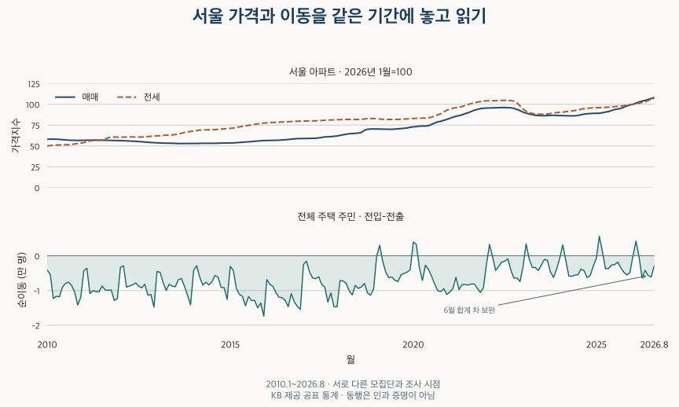

이사와 인구 · 서울 이동과 집값
집값이 오르면 서울을 더 떠날까? 16년 순이동과 매매·전세 지수
2010~2025년 서울 순유출과 아파트 매매·전세 상승기를 비교합니다. 평균·중앙값과 시작 연도에 따라 달라지는 결과, 2026년 1~8월과 연령별 이동을 확인합니다.
분석 기간 · 2010~2025년 · 최근 비교는 2026년 1~8월 | 자료 기준일 · 2026-10-03
“집값이 올라서 서울을 떠나는 사람이 많아졌다”는 설명은 그럴듯합니다. 하지만 서울에서 나간 사람 수, 들어온 사람 수, 둘의 차이인 순유출은 서로 다른 숫자입니다. 2010~2025년을 비교하면 매매가격 상승기의 평균 순유출은 하락기보다 조금 많았지만, 중앙값은 오히려 작았습니다. 비교를 2015년부터 시작하면 격차도 크게 달라집니다.
“서울을 떠났다”와 “서울 순유출”은 같은 뜻인가요?
아닙니다. 전출은 서울에서 다른 시도로 나간 이동이고, 순유출은 그 전출에서 다른 시도로부터의 전입을 뺀 값입니다. 전출이 그대로여도 전입이 줄면 순유출은 커집니다. 순이동은 반대로 전입−전출이므로 음수가 순유출, 양수가 순유입입니다.
이 글은 국내인구이동의 시도간 이동 정의에 따라 서울 경계를 넘은 주민등록 이동을 셉니다. 서울 안에서 다른 구로 이사한 이동은 전입·전출 총량에서 제외합니다. 같은 사람이 기간 중 다시 이동할 수 있어, 서로 다른 사람을 중복 없이 센 수와도 다릅니다.
이동 통계에는 모든 주택 유형의 주민이 포함되지만 가격은 KB 서울 아파트 매매·전세 지수입니다. 아파트 거주자나 실제 매수자만의 이동을 관측한 것이 아닙니다. 사람 수를 가구 수로 바꾸어 읽지 않는 기준은 인구·세대·가구의 차이에서 확인할 수 있습니다.
집값이 오른 해에는 서울 순유출이 더 컸나요?
매매는 어떤 대표값을 택하는지에 따라 답이 달라집니다. 2010~2025년의 완결된 16개 연도를 동등하게 비교했습니다. 연간 지수 변화가 0%보다 크면 상승, 작으면 하락으로 분류했습니다. 정확히 0%인 해는 없었습니다.
| 가격 구분 | 연도 수 | 평균 순유출 | 중앙값 순유출 | 해당 연도 |
|---|---|---|---|---|
| 매매 상승 | 10 | 86,620.2 | 93,158.5 | 2014, 2015, 2016, 2017, 2018, 2019, 2020, 2021, 2024, 2025 |
| 매매 하락 | 6 | 83,144.7 | 102,098.5 | 2010, 2011, 2012, 2013, 2022, 2023 |
| 전세 상승 | 13 | 96,068.6 | 103,647.0 | 2010, 2011, 2012, 2013, 2014, 2015, 2016, 2017, 2018, 2020, 2021, 2024, 2025 |
| 전세 하락 | 3 | 38,726.0 | 35,340.0 | 2019, 2022, 2023 |
매매 상승기 평균은 하락기보다 3,475.5명 많습니다. 하지만 중앙값은 상승기가 8,940.0명 적습니다. 평균 한 칸만 골라 “집값이 오르면 더 떠난다”고 요약하면 같은 자료의 반대 단서를 놓칩니다.
전세 상승기 평균 순유출은 96,068.6명으로 하락기의 38,726.0명보다 큽니다. 중앙값도 같은 방향입니다. 다만 상승 13년과 하락 3년은 크기가 다른 비교군이며, 하락한 세 해는 모두 비교적 최근입니다. 전세가 하락한 해에는 일자리·금리·주택 공급 등 다른 조건도 달랐을 수 있습니다.
아래 표에는 상승기뿐 아니라 하락기의 값도 모두 담았습니다. 2010~2013년에는 매매지수가 하락했는데도 매년 10만 명 넘는 순유출이 있었습니다. 반대로 매매지수가 11.26% 오른 2025년의 순유출은 26,769명입니다. 16년 모두 순유출이었지만 그 크기와 가격의 방향이 한 가지 규칙으로 움직이지는 않았습니다.
| 연도 | 전입 | 전출 | 순이동 | 매매 변화 | 전세 변화 |
|---|---|---|---|---|---|
| 2010 | 533,307 | 648,330 | -115,023 | -2.19 | +7.38 |
| 2011 | 506,626 | 619,684 | -113,058 | -0.44 | +13.42 |
| 2012 | 485,981 | 589,628 | -103,647 | -4.48 | +2.21 |
| 2013 | 467,082 | 567,632 | -100,550 | -1.84 | +8.97 |
| 2014 | 475,571 | 563,402 | -87,831 | +1.09 | +4.86 |
| 2015 | 459,902 | 597,158 | -137,256 | +5.56 | +9.57 |
| 2016 | 453,687 | 593,944 | -140,257 | +4.22 | +3.09 |
| 2017 | 454,130 | 552,616 | -98,486 | +5.28 | +2.08 |
| 2018 | 460,131 | 570,361 | -110,230 | +13.56 | +1.62 |
| 2019 | 475,866 | 525,454 | -49,588 | +2.89 | -0.18 |
| 2020 | 510,014 | 574,864 | -64,850 | +13.06 | +12.25 |
| 2021 | 461,123 | 567,366 | -106,243 | +16.40 | +11.86 |
| 2022 | 430,576 | 465,916 | -35,340 | -2.96 | -5.45 |
| 2023 | 430,159 | 461,409 | -31,250 | -6.28 | -8.36 |
| 2024 | 428,448 | 473,140 | -44,692 | +2.84 | +6.58 |
| 2025 | 438,327 | 465,096 | -26,769 | +11.26 | +3.83 |
가격 변화는 공표된 월별 증감률 12개를 복리로 연결한 값입니다. 월별 %를 단순히 더하지 않았습니다. 2010년 1월 변화율도 포함하므로 첫해만 11개월로 짧아지지 않습니다.
상승 기준이나 시작 연도를 바꾸면 어떻게 되나요?
차이가 커지거나 비교군이 바뀝니다. 결과를 보고 유리한 기간을 찾지 않도록, 연간 ±1% 이내를 보합으로 두는 비교와 2015~2025년 비교를 먼저 정했습니다.
| 가격 구분 | 연도 수 | 평균 순유출 | 중앙값 순유출 | 해당 연도 |
|---|---|---|---|---|
| 매매 상승 | 10 | 86,620.2 | 93,158.5 | 2014, 2015, 2016, 2017, 2018, 2019, 2020, 2021, 2024, 2025 |
| 매매 하락 | 5 | 77,162.0 | 100,550.0 | 2010, 2012, 2013, 2022, 2023 |
| 매매 보합 | 1 | 113,058.0 | 113,058.0 | 2011 |
| 전세 상승 | 13 | 96,068.6 | 103,647.0 | 2010, 2011, 2012, 2013, 2014, 2015, 2016, 2017, 2018, 2020, 2021, 2024, 2025 |
| 전세 하락 | 2 | 33,295.0 | 33,295.0 | 2022, 2023 |
| 전세 보합 | 1 | 49,588.0 | 49,588.0 | 2019 |
±1% 규칙에서는 매매가 −0.44%인 2011년, 전세가 −0.18%인 2019년이 보합으로 옮겨 갑니다. 하락기 평균이 각각 77,162.0명과 33,295.0명으로 달라집니다. 작은 가격 변화를 어느 쪽에 넣는지도 결과에 영향을 줍니다.
| 가격 구분 | 연도 수 | 평균 순유출 | 중앙값 순유출 | 해당 연도 |
|---|---|---|---|---|
| 매매 상승 | 9 | 86,485.7 | 98,486.0 | 2015, 2016, 2017, 2018, 2019, 2020, 2021, 2024, 2025 |
| 매매 하락 | 2 | 33,295.0 | 33,295.0 | 2022, 2023 |
| 전세 상승 | 8 | 91,097.9 | 102,364.5 | 2015, 2016, 2017, 2018, 2020, 2021, 2024, 2025 |
| 전세 하락 | 3 | 38,726.0 | 35,340.0 | 2019, 2022, 2023 |
2015년부터만 보면 매매 상승기 평균은 86,485.7명, 하락기는 33,295.0명입니다. 전체 16년보다 차이가 훨씬 큽니다. 가격이 내려가면서도 순유출이 컸던 2010~2013년이 빠지고, 하락기가 2022·2023년만 남기 때문입니다. 시작점을 바꿔 얻은 격차를 가격의 효과라고 부를 수는 없습니다.
가장 설득력 있는 반론은 “주거비 부담이 이동에 영향을 주되, 계약과 이사 사이에 시차가 있을 수 있다”는 것입니다. 그 가능성은 남아 있습니다. 이번 비교는 같은 해의 동행을 살폈으며 시차 효과를 추정하지 않았습니다. 개인별 주거비·소득·이동 경로를 연결하거나 다른 요인을 통제하지 않았으므로, 영향이 없다는 증명도 아닙니다.
2026년에는 서울 순유출이 늘었나요?
확인 가능한 1~8월끼리 비교하면 늘었습니다. 2025년 같은 기간의 8,291명에서 2026년 21,313명으로 13,022명 많아졌습니다. 2026년을 2025년 전체와 비교하거나 12개월로 늘려 계산하지 않았습니다.
| 연도 | 전입 | 전출 | 순이동 | 매매 변화 | 전세 변화 |
|---|---|---|---|---|---|
| 2025 | 314,622 | 322,913 | -8,291 | +5.81 | +1.74 |
| 2026 | 311,812 | 333,125 | -21,313 | +9.07 | +7.59 |
전출은 322,913명에서 333,125명으로 10,212명 늘었고, 전입은 314,622명에서 311,812명으로 2,810명 줄었습니다. 두 변화가 더해져 순유출이 13,022명 증가했습니다. “떠나는 사람이 늘었다”만으로는 전입 감소가 가려집니다.
같은 1~8월 매매·전세 지수는 각각 9.07%와 7.59% 올랐습니다. 가격 상승과 순유출 확대가 함께 관측된 것은 맞습니다. 다만 8개월의 지역 합계는 인과 증거가 아니며, 이 불완결 연도를 앞의 16년 상승·하락 그룹에 섞지 않았습니다.
모든 연령이 서울에서 빠져나가나요?
아닙니다. 2026년 1~8월 20대는 24,671명 순유입, 30대는 16,140명 순유출입니다. 0~19세도 순유입입니다. 전체 순유출만으로 모든 연령의 방향을 설명할 수 없습니다.
| 연령 | 2025년 | 2026년 | 순이동 변화 |
|---|---|---|---|
| 0~19세 | +4,478 | +3,209 | -1,269 |
| 20대 | +29,434 | +24,671 | -4,763 |
| 30대 | -11,662 | -16,140 | -4,478 |
| 40대 | -5,585 | -6,618 | -1,033 |
| 50대 | -9,433 | -9,574 | -141 |
| 60대 | -8,832 | -9,399 | -567 |
| 70세 이상 | -6,691 | -7,462 | -771 |
2025년 같은 기간보다 20대 순유입은 4,763명 줄고, 30대 순유출은 4,478명 커졌습니다. 두 연령의 변화가 전체에 함께 반영됐지만, 이 표로 20대의 취업이나 30대의 주거비를 각자의 이동 원인으로 확정할 수는 없습니다.
연령별 숫자는 부호 있는 순이동으로 제시했습니다. 순유입인 연령과 순유출인 연령이 상쇄되므로 전체 순유출을 분모로 “연령별 비중”을 만들지 않았습니다. 전 기간의 서울·경기 차이는 16년 연령별 순이동, 이동 이유의 별도 통계는 전입 사유를 읽는 법으로 이어집니다.
서울 2010~2025년 연령별 순이동 전체 표
| 연도 | 0~19세 | 20대 | 30대 | 40대 | 50대 | 60대 | 70세 이상 |
|---|---|---|---|---|---|---|---|
| 2010 | -23,380 | +11,981 | -48,257 | -17,602 | -18,370 | -13,017 | -6,378 |
| 2011 | -22,633 | +15,607 | -44,140 | -18,785 | -20,508 | -14,150 | -8,449 |
| 2012 | -22,249 | +21,807 | -42,029 | -19,537 | -20,938 | -13,355 | -7,346 |
| 2013 | -21,533 | +20,979 | -42,023 | -18,270 | -18,947 | -13,114 | -7,642 |
| 2014 | -17,247 | +26,300 | -38,964 | -18,241 | -18,431 | -13,144 | -8,104 |
| 2015 | -24,686 | +17,790 | -48,397 | -24,826 | -25,462 | -19,868 | -11,807 |
| 2016 | -27,388 | +22,563 | -47,696 | -27,265 | -27,391 | -20,932 | -12,148 |
| 2017 | -18,685 | +31,955 | -36,865 | -21,640 | -22,801 | -18,746 | -11,704 |
| 2018 | -23,341 | +39,341 | -42,521 | -26,459 | -24,311 | -19,708 | -13,231 |
| 2019 | -9,281 | +47,566 | -28,541 | -17,885 | -18,508 | -13,611 | -9,328 |
| 2020 | -11,417 | +44,823 | -28,783 | -21,052 | -20,411 | -16,571 | -11,439 |
| 2021 | -15,609 | +35,520 | -41,826 | -25,780 | -24,738 | -20,250 | -13,560 |
| 2022 | -2,878 | +53,689 | -27,330 | -16,315 | -17,524 | -14,839 | -10,143 |
| 2023 | -621 | +46,205 | -23,489 | -13,699 | -15,930 | -14,326 | -9,390 |
| 2024 | +358 | +36,561 | -26,224 | -12,864 | -16,707 | -15,212 | -10,604 |
| 2025 | +4,618 | +35,937 | -18,730 | -8,491 | -14,582 | -14,552 | -10,969 |
월별로 놓고 보면 같은 방향으로 움직이나요?
가격은 누적된 지수 수준이고 순이동은 한 달 동안의 이동 차이이므로, 두 선의 높이를 직접 비교할 수 없습니다. 아래 그림은 같은 가로축에 서로 다른 패널로 배치했습니다. 이동의 계절성도 있어, 두 선이 가까워 보이는 구간만 골라 원인을 판단하지 않습니다.

가격 자료는 2026년 9월까지 있지만 이동과 함께 있는 8월까지만 그림에 넣었습니다. 연간으로는 전부 순유출이던 서울도 2026년 2월에는 4,227명 순유입이었습니다. 연간 방향과 매달 방향은 같지 않습니다.
보유한 KB 월별 이동 자료에는 6월이 빠져 있습니다. 같은 자료의 2분기 합계에서 4·5월 값을 빼서 6월을 구했습니다. 보간이나 0 채움이 아닙니다. 공식 6월 국내인구이동 보고서(2026년 7월 29일 발표, 본문 3쪽 표 2)의 서울 전체 전입 95,545명·전출 101,242명·순이동 −5,697명과도 일치합니다.
공식표의 전입·전출은 서울 내부 이동을 포함합니다. 이 글의 시도간 전입·전출 및 연령별 6월 값은 분기 차로 계산한 값이며, 공식표가 그 세부 칸 모두를 직접 보여 주는 것은 아닙니다.
200개월 이동·지수·전월 대비 변화 전체 표
| 월 | 전입 | 전출 | 순이동 | 매매 지수 | 전세 지수 | 매매 변화 | 전세 변화 |
|---|---|---|---|---|---|---|---|
| 2010-01 | 44,040 | 48,164 | -4,124 | 58.01 | 49.97 | +0.09 | +0.55 |
| 2010-02 | 57,197 | 62,518 | -5,321 | 58.17 | 50.47 | +0.27 | +0.99 |
| 2010-03 | 59,284 | 71,590 | -12,306 | 58.16 | 50.82 | -0.02 | +0.70 |
| 2010-04 | 45,303 | 56,970 | -11,667 | 58.06 | 51.07 | -0.17 | +0.49 |
| 2010-05 | 41,672 | 53,495 | -11,823 | 57.84 | 51.22 | -0.36 | +0.29 |
| 2010-06 | 40,310 | 49,366 | -9,056 | 57.52 | 51.29 | -0.57 | +0.15 |
| 2010-07 | 39,412 | 47,358 | -7,946 | 57.22 | 51.33 | -0.53 | +0.06 |
| 2010-08 | 45,077 | 52,667 | -7,590 | 56.96 | 51.42 | -0.45 | +0.19 |
| 2010-09 | 35,874 | 44,427 | -8,553 | 56.81 | 51.78 | -0.25 | +0.69 |
| 2010-10 | 41,350 | 51,818 | -10,468 | 56.71 | 52.38 | -0.18 | +1.15 |
| 2010-11 | 39,799 | 53,996 | -14,197 | 56.65 | 52.96 | -0.10 | +1.12 |
| 2010-12 | 43,989 | 55,961 | -11,972 | 56.69 | 53.37 | +0.07 | +0.77 |
| 2011-01 | 42,897 | 47,221 | -4,324 | 56.78 | 53.98 | +0.16 | +1.14 |
| 2011-02 | 56,074 | 59,671 | -3,597 | 56.95 | 55.11 | +0.30 | +2.11 |
| 2011-03 | 52,957 | 63,818 | -10,861 | 57.03 | 56.10 | +0.15 | +1.79 |
| 2011-04 | 40,435 | 50,491 | -10,056 | 57.04 | 56.47 | +0.01 | +0.67 |
| 2011-05 | 40,632 | 50,952 | -10,320 | 56.99 | 56.66 | -0.08 | +0.33 |
| 2011-06 | 36,833 | 47,174 | -10,341 | 56.92 | 56.92 | -0.12 | +0.46 |
| 2011-07 | 35,733 | 44,453 | -8,720 | 56.83 | 57.56 | -0.16 | +1.12 |
| 2011-08 | 45,945 | 55,780 | -9,835 | 56.77 | 58.54 | -0.11 | +1.71 |
| 2011-09 | 37,054 | 47,005 | -9,951 | 56.71 | 59.84 | -0.11 | +2.21 |
| 2011-10 | 39,396 | 49,237 | -9,841 | 56.63 | 60.46 | -0.13 | +1.03 |
| 2011-11 | 37,764 | 50,648 | -12,884 | 56.53 | 60.64 | -0.18 | +0.30 |
| 2011-12 | 40,906 | 53,234 | -12,328 | 56.44 | 60.53 | -0.16 | -0.18 |
| 2012-01 | 40,179 | 43,560 | -3,381 | 56.35 | 60.50 | -0.16 | -0.05 |
| 2012-02 | 60,750 | 63,603 | -2,853 | 56.27 | 60.61 | -0.14 | +0.19 |
| 2012-03 | 48,528 | 57,560 | -9,032 | 56.13 | 60.76 | -0.25 | +0.24 |
| 2012-04 | 39,675 | 48,370 | -8,695 | 55.89 | 60.77 | -0.43 | +0.02 |
| 2012-05 | 38,859 | 47,238 | -8,379 | 55.74 | 60.73 | -0.26 | -0.07 |
| 2012-06 | 33,671 | 41,505 | -7,834 | 55.57 | 60.71 | -0.31 | -0.03 |
| 2012-07 | 35,228 | 43,981 | -8,753 | 55.27 | 60.68 | -0.54 | -0.05 |
| 2012-08 | 38,283 | 47,509 | -9,226 | 55.01 | 60.69 | -0.47 | +0.01 |
| 2012-09 | 31,864 | 40,054 | -8,190 | 54.66 | 61.00 | -0.65 | +0.52 |
| 2012-10 | 39,946 | 51,295 | -11,349 | 54.32 | 61.40 | -0.61 | +0.65 |
| 2012-11 | 39,918 | 51,048 | -11,130 | 54.11 | 61.72 | -0.40 | +0.52 |
| 2012-12 | 39,080 | 53,905 | -14,825 | 53.91 | 61.87 | -0.37 | +0.25 |
| 2013-01 | 42,643 | 47,172 | -4,529 | 53.71 | 62.07 | -0.37 | +0.33 |
| 2013-02 | 53,503 | 58,226 | -4,723 | 53.57 | 62.35 | -0.26 | +0.45 |
| 2013-03 | 44,724 | 52,437 | -7,713 | 53.43 | 62.67 | -0.26 | +0.53 |
| 2013-04 | 38,414 | 48,419 | -10,005 | 53.36 | 62.93 | -0.13 | +0.41 |
| 2013-05 | 37,080 | 45,291 | -8,211 | 53.33 | 63.07 | -0.05 | +0.22 |
| 2013-06 | 33,307 | 42,057 | -8,750 | 53.22 | 63.23 | -0.21 | +0.25 |
| 2013-07 | 35,581 | 44,469 | -8,888 | 53.05 | 63.63 | -0.33 | +0.64 |
| 2013-08 | 37,150 | 44,080 | -6,930 | 52.90 | 64.26 | -0.29 | +0.99 |
| 2013-09 | 31,024 | 37,543 | -6,519 | 52.87 | 65.17 | -0.05 | +1.42 |
| 2013-10 | 37,889 | 46,662 | -8,773 | 52.92 | 66.15 | +0.09 | +1.50 |
| 2013-11 | 34,357 | 45,714 | -11,357 | 52.92 | 66.82 | +0.01 | +1.01 |
| 2013-12 | 41,410 | 55,562 | -14,152 | 52.92 | 67.41 | -0.00 | +0.89 |
| 2014-01 | 39,483 | 43,755 | -4,272 | 52.94 | 67.95 | +0.03 | +0.80 |
| 2014-02 | 56,381 | 59,213 | -2,832 | 53.01 | 68.50 | +0.13 | +0.80 |
| 2014-03 | 47,673 | 53,816 | -6,143 | 53.13 | 68.98 | +0.23 | +0.70 |
| 2014-04 | 39,127 | 47,583 | -8,456 | 53.17 | 69.23 | +0.08 | +0.37 |
| 2014-05 | 36,827 | 44,414 | -7,587 | 53.16 | 69.29 | -0.03 | +0.09 |
| 2014-06 | 33,870 | 42,265 | -8,395 | 53.10 | 69.35 | -0.10 | +0.09 |
| 2014-07 | 36,515 | 44,034 | -7,519 | 53.10 | 69.43 | -0.01 | +0.11 |
| 2014-08 | 37,484 | 43,147 | -5,663 | 53.12 | 69.59 | +0.03 | +0.23 |
| 2014-09 | 34,672 | 40,798 | -6,126 | 53.28 | 69.84 | +0.31 | +0.36 |
| 2014-10 | 38,200 | 47,322 | -9,122 | 53.44 | 70.14 | +0.29 | +0.43 |
| 2014-11 | 34,204 | 43,372 | -9,168 | 53.49 | 70.39 | +0.10 | +0.36 |
| 2014-12 | 41,135 | 53,683 | -12,548 | 53.50 | 70.69 | +0.02 | +0.42 |
| 2015-01 | 42,915 | 45,970 | -3,055 | 53.54 | 70.98 | +0.08 | +0.41 |
| 2015-02 | 47,728 | 51,864 | -4,136 | 53.65 | 71.42 | +0.19 | +0.62 |
| 2015-03 | 49,622 | 58,996 | -9,374 | 53.90 | 72.15 | +0.48 | +1.03 |
| 2015-04 | 37,092 | 48,209 | -11,117 | 54.20 | 72.94 | +0.55 | +1.10 |
| 2015-05 | 33,344 | 45,020 | -11,676 | 54.41 | 73.46 | +0.39 | +0.71 |
| 2015-06 | 34,972 | 49,350 | -14,378 | 54.68 | 74.12 | +0.49 | +0.90 |
| 2015-07 | 35,731 | 47,454 | -11,723 | 54.93 | 74.70 | +0.47 | +0.78 |
| 2015-08 | 36,905 | 49,816 | -12,911 | 55.24 | 75.25 | +0.55 | +0.75 |
| 2015-09 | 31,020 | 43,906 | -12,886 | 55.64 | 75.98 | +0.73 | +0.97 |
| 2015-10 | 35,946 | 50,943 | -14,997 | 55.92 | 76.43 | +0.49 | +0.59 |
| 2015-11 | 35,255 | 48,865 | -13,610 | 56.30 | 77.07 | +0.68 | +0.85 |
| 2015-12 | 39,372 | 56,765 | -17,393 | 56.47 | 77.45 | +0.32 | +0.49 |
| 2016-01 | 39,518 | 46,372 | -6,854 | 56.54 | 77.73 | +0.11 | +0.36 |
| 2016-02 | 51,347 | 59,558 | -8,211 | 56.62 | 77.99 | +0.15 | +0.33 |
| 2016-03 | 46,540 | 55,360 | -8,820 | 56.66 | 78.22 | +0.07 | +0.28 |
| 2016-04 | 33,748 | 44,406 | -10,658 | 56.73 | 78.39 | +0.12 | +0.23 |
| 2016-05 | 33,834 | 45,792 | -11,958 | 56.89 | 78.59 | +0.28 | +0.25 |
| 2016-06 | 33,858 | 45,922 | -12,064 | 57.11 | 78.81 | +0.40 | +0.27 |
| 2016-07 | 32,178 | 45,023 | -12,845 | 57.42 | 79.00 | +0.54 | +0.24 |
| 2016-08 | 39,909 | 54,580 | -14,671 | 57.75 | 79.13 | +0.56 | +0.17 |
| 2016-09 | 33,180 | 44,090 | -10,910 | 58.00 | 79.28 | +0.44 | +0.19 |
| 2016-10 | 35,713 | 48,971 | -13,258 | 58.41 | 79.53 | +0.72 | +0.32 |
| 2016-11 | 34,752 | 49,334 | -14,582 | 58.80 | 79.74 | +0.66 | +0.27 |
| 2016-12 | 39,110 | 54,536 | -15,426 | 58.86 | 79.85 | +0.10 | +0.13 |
| 2017-01 | 41,079 | 43,597 | -2,518 | 58.87 | 79.89 | +0.03 | +0.06 |
| 2017-02 | 57,484 | 59,032 | -1,548 | 58.90 | 79.92 | +0.04 | +0.03 |
| 2017-03 | 48,006 | 52,705 | -4,699 | 58.96 | 79.95 | +0.10 | +0.04 |
| 2017-04 | 33,825 | 40,200 | -6,375 | 59.04 | 80.01 | +0.14 | +0.08 |
| 2017-05 | 35,872 | 42,462 | -6,590 | 59.17 | 80.10 | +0.22 | +0.11 |
| 2017-06 | 34,300 | 40,345 | -6,045 | 59.67 | 80.35 | +0.85 | +0.32 |
| 2017-07 | 33,519 | 41,762 | -8,243 | 60.18 | 80.64 | +0.86 | +0.35 |
| 2017-08 | 40,083 | 49,074 | -8,991 | 60.82 | 80.92 | +1.05 | +0.35 |
| 2017-09 | 33,826 | 47,157 | -13,331 | 60.91 | 81.05 | +0.15 | +0.16 |
| 2017-10 | 29,140 | 39,881 | -10,741 | 61.18 | 81.20 | +0.45 | +0.19 |
| 2017-11 | 31,934 | 46,621 | -14,687 | 61.56 | 81.37 | +0.62 | +0.20 |
| 2017-12 | 35,062 | 49,780 | -14,718 | 61.97 | 81.51 | +0.66 | +0.17 |
| 2018-01 | 44,300 | 51,455 | -7,155 | 62.66 | 81.66 | +1.12 | +0.18 |
| 2018-02 | 49,281 | 56,515 | -7,234 | 63.28 | 81.76 | +0.99 | +0.12 |
| 2018-03 | 48,381 | 56,359 | -7,978 | 64.07 | 81.85 | +1.25 | +0.12 |
| 2018-04 | 36,088 | 46,155 | -10,067 | 64.59 | 81.85 | +0.81 | -0.01 |
| 2018-05 | 34,524 | 45,822 | -11,298 | 64.85 | 81.79 | +0.40 | -0.07 |
| 2018-06 | 32,597 | 41,119 | -8,522 | 65.10 | 81.76 | +0.39 | -0.04 |
| 2018-07 | 35,180 | 44,581 | -9,401 | 65.45 | 81.79 | +0.53 | +0.03 |
| 2018-08 | 38,813 | 47,781 | -8,968 | 66.21 | 81.93 | +1.17 | +0.18 |
| 2018-09 | 29,371 | 37,332 | -7,961 | 68.75 | 82.42 | +3.83 | +0.59 |
| 2018-10 | 37,723 | 48,430 | -10,707 | 70.01 | 82.81 | +1.84 | +0.48 |
| 2018-11 | 35,568 | 46,903 | -11,335 | 70.29 | 82.91 | +0.40 | +0.12 |
| 2018-12 | 38,305 | 47,909 | -9,604 | 70.37 | 82.83 | +0.11 | -0.10 |
| 2019-01 | 48,430 | 48,524 | -94 | 70.35 | 82.56 | -0.03 | -0.33 |
| 2019-02 | 55,811 | 52,777 | +3,034 | 70.28 | 82.28 | -0.09 | -0.34 |
| 2019-03 | 46,326 | 47,976 | -1,650 | 70.16 | 82.05 | -0.17 | -0.28 |
| 2019-04 | 37,599 | 42,337 | -4,738 | 70.06 | 81.91 | -0.14 | -0.16 |
| 2019-05 | 35,753 | 42,081 | -6,328 | 70.02 | 81.83 | -0.06 | -0.10 |
| 2019-06 | 29,815 | 35,920 | -6,105 | 69.96 | 81.77 | -0.08 | -0.07 |
| 2019-07 | 36,597 | 43,674 | -7,077 | 70.22 | 81.79 | +0.37 | +0.03 |
| 2019-08 | 37,660 | 45,070 | -7,410 | 70.51 | 81.89 | +0.40 | +0.12 |
| 2019-09 | 34,136 | 39,602 | -5,466 | 70.82 | 82.00 | +0.45 | +0.13 |
| 2019-10 | 36,760 | 41,820 | -5,060 | 71.23 | 82.19 | +0.58 | +0.24 |
| 2019-11 | 34,445 | 39,153 | -4,708 | 71.63 | 82.36 | +0.56 | +0.21 |
| 2019-12 | 42,534 | 46,520 | -3,986 | 72.40 | 82.68 | +1.07 | +0.38 |
| 2020-01 | 49,624 | 45,678 | +3,946 | 72.88 | 82.97 | +0.67 | +0.35 |
| 2020-02 | 60,778 | 57,473 | +3,305 | 73.26 | 83.18 | +0.51 | +0.26 |
| 2020-03 | 54,152 | 57,556 | -3,404 | 73.79 | 83.33 | +0.73 | +0.18 |
| 2020-04 | 36,535 | 43,652 | -7,117 | 73.91 | 83.39 | +0.15 | +0.07 |
| 2020-05 | 37,495 | 40,204 | -2,709 | 73.91 | 83.44 | -0.00 | +0.06 |
| 2020-06 | 39,940 | 43,872 | -3,932 | 74.29 | 83.73 | +0.52 | +0.35 |
| 2020-07 | 37,801 | 43,720 | -5,919 | 75.88 | 84.57 | +2.14 | +1.00 |
| 2020-08 | 40,372 | 48,416 | -8,044 | 77.44 | 85.57 | +2.05 | +1.18 |
| 2020-09 | 37,935 | 47,979 | -10,044 | 78.98 | 87.36 | +2.00 | +2.09 |
| 2020-10 | 35,444 | 45,756 | -10,312 | 79.57 | 88.54 | +0.74 | +1.36 |
| 2020-11 | 35,866 | 45,352 | -9,486 | 80.79 | 90.99 | +1.54 | +2.77 |
| 2020-12 | 44,072 | 55,206 | -11,134 | 81.86 | 92.80 | +1.32 | +1.99 |
| 2021-01 | 39,144 | 49,584 | -10,440 | 83.17 | 94.21 | +1.60 | +1.52 |
| 2021-02 | 47,984 | 57,399 | -9,415 | 84.50 | 95.25 | +1.60 | +1.10 |
| 2021-03 | 52,216 | 58,432 | -6,216 | 85.62 | 96.01 | +1.33 | +0.80 |
| 2021-04 | 36,371 | 46,109 | -9,738 | 86.44 | 96.55 | +0.95 | +0.56 |
| 2021-05 | 34,265 | 42,574 | -8,309 | 87.31 | 97.25 | +1.01 | +0.72 |
| 2021-06 | 33,918 | 42,206 | -8,288 | 88.76 | 98.68 | +1.66 | +1.48 |
| 2021-07 | 36,403 | 44,832 | -8,429 | 89.90 | 99.77 | +1.28 | +1.10 |
| 2021-08 | 40,193 | 48,310 | -8,117 | 91.33 | 100.87 | +1.59 | +1.11 |
| 2021-09 | 36,644 | 44,763 | -8,119 | 92.88 | 101.90 | +1.69 | +1.02 |
| 2021-10 | 32,171 | 41,560 | -9,389 | 93.85 | 102.40 | +1.05 | +0.49 |
| 2021-11 | 33,619 | 44,173 | -10,554 | 94.84 | 103.34 | +1.06 | +0.92 |
| 2021-12 | 38,195 | 47,424 | -9,229 | 95.28 | 103.81 | +0.46 | +0.45 |
| 2022-01 | 37,935 | 40,343 | -2,408 | 95.50 | 104.13 | +0.23 | +0.31 |
| 2022-02 | 55,283 | 52,018 | +3,265 | 95.59 | 104.24 | +0.09 | +0.11 |
| 2022-03 | 46,005 | 46,280 | -275 | 95.64 | 104.22 | +0.05 | -0.02 |
| 2022-04 | 32,079 | 36,245 | -4,166 | 95.75 | 104.28 | +0.11 | +0.06 |
| 2022-05 | 35,383 | 38,465 | -3,082 | 95.95 | 104.55 | +0.21 | +0.26 |
| 2022-06 | 32,439 | 34,249 | -1,810 | 96.08 | 104.73 | +0.13 | +0.17 |
| 2022-07 | 33,107 | 34,683 | -1,576 | 96.11 | 104.79 | +0.03 | +0.06 |
| 2022-08 | 38,618 | 39,502 | -884 | 95.97 | 104.65 | -0.15 | -0.14 |
| 2022-09 | 30,183 | 34,332 | -4,149 | 95.78 | 104.45 | -0.19 | -0.19 |
| 2022-10 | 27,359 | 33,795 | -6,436 | 95.14 | 103.75 | -0.67 | -0.66 |
| 2022-11 | 29,637 | 36,042 | -6,405 | 93.80 | 101.48 | -1.42 | -2.19 |
| 2022-12 | 32,548 | 39,962 | -7,414 | 92.45 | 98.15 | -1.43 | -3.29 |
| 2023-01 | 36,753 | 39,776 | -3,023 | 90.52 | 94.24 | -2.09 | -3.98 |
| 2023-02 | 52,937 | 49,470 | +3,467 | 89.44 | 91.76 | -1.20 | -2.63 |
| 2023-03 | 45,215 | 46,093 | -878 | 88.39 | 90.11 | -1.17 | -1.79 |
| 2023-04 | 31,377 | 34,742 | -3,365 | 87.53 | 89.00 | -0.97 | -1.24 |
| 2023-05 | 34,048 | 37,401 | -3,353 | 86.77 | 88.33 | -0.87 | -0.75 |
| 2023-06 | 31,919 | 36,152 | -4,233 | 86.52 | 88.23 | -0.28 | -0.12 |
| 2023-07 | 32,947 | 35,639 | -2,692 | 86.32 | 88.01 | -0.23 | -0.24 |
| 2023-08 | 38,841 | 39,861 | -1,020 | 86.27 | 88.04 | -0.06 | +0.04 |
| 2023-09 | 30,930 | 32,300 | -1,370 | 86.50 | 88.41 | +0.26 | +0.42 |
| 2023-10 | 31,371 | 36,098 | -4,727 | 86.70 | 88.97 | +0.23 | +0.62 |
| 2023-11 | 30,087 | 36,326 | -6,239 | 86.74 | 89.52 | +0.04 | +0.62 |
| 2023-12 | 33,734 | 37,551 | -3,817 | 86.64 | 89.94 | -0.11 | +0.47 |
| 2024-01 | 43,204 | 43,969 | -765 | 86.48 | 90.35 | -0.19 | +0.45 |
| 2024-02 | 54,551 | 51,417 | +3,134 | 86.37 | 90.60 | -0.12 | +0.28 |
| 2024-03 | 43,047 | 44,284 | -1,237 | 86.24 | 91.07 | -0.15 | +0.52 |
| 2024-04 | 35,047 | 40,889 | -5,842 | 86.10 | 91.63 | -0.17 | +0.61 |
| 2024-05 | 30,796 | 36,679 | -5,883 | 86.07 | 92.01 | -0.03 | +0.41 |
| 2024-06 | 27,111 | 32,669 | -5,558 | 86.18 | 92.53 | +0.12 | +0.57 |
| 2024-07 | 33,644 | 39,084 | -5,440 | 86.66 | 93.35 | +0.56 | +0.88 |
| 2024-08 | 35,814 | 39,662 | -3,848 | 87.44 | 94.13 | +0.89 | +0.84 |
| 2024-09 | 30,112 | 34,412 | -4,300 | 88.20 | 94.80 | +0.87 | +0.71 |
| 2024-10 | 31,774 | 38,054 | -6,280 | 88.64 | 95.18 | +0.50 | +0.40 |
| 2024-11 | 28,166 | 33,882 | -5,716 | 88.89 | 95.59 | +0.29 | +0.44 |
| 2024-12 | 35,182 | 38,139 | -2,957 | 89.11 | 95.86 | +0.24 | +0.28 |
| 2025-01 | 37,115 | 37,911 | -796 | 89.16 | 95.93 | +0.06 | +0.07 |
| 2025-02 | 57,740 | 52,121 | +5,619 | 89.22 | 95.96 | +0.06 | +0.03 |
| 2025-03 | 43,615 | 42,309 | +1,306 | 89.80 | 96.11 | +0.65 | +0.16 |
| 2025-04 | 31,698 | 35,416 | -3,718 | 90.68 | 96.37 | +0.98 | +0.27 |
| 2025-05 | 31,809 | 35,466 | -3,657 | 91.24 | 96.52 | +0.61 | +0.15 |
| 2025-06 | 34,257 | 36,933 | -2,676 | 92.54 | 96.90 | +1.43 | +0.40 |
| 2025-07 | 41,353 | 43,907 | -2,554 | 93.73 | 97.27 | +1.28 | +0.38 |
| 2025-08 | 37,035 | 38,850 | -1,815 | 94.28 | 97.53 | +0.60 | +0.26 |
| 2025-09 | 34,441 | 37,823 | -3,382 | 95.05 | 97.92 | +0.82 | +0.40 |
| 2025-10 | 27,520 | 32,225 | -4,705 | 96.44 | 98.34 | +1.46 | +0.43 |
| 2025-11 | 26,417 | 31,921 | -5,504 | 98.10 | 98.89 | +1.72 | +0.56 |
| 2025-12 | 35,327 | 40,214 | -4,887 | 99.14 | 99.53 | +1.06 | +0.64 |
| 2026-01 | 43,844 | 43,949 | -105 | 100.00 | 100.00 | +0.87 | +0.47 |
| 2026-02 | 52,821 | 48,594 | +4,227 | 101.34 | 100.59 | +1.34 | +0.59 |
| 2026-03 | 49,033 | 49,200 | -167 | 102.78 | 101.34 | +1.43 | +0.75 |
| 2026-04 | 34,488 | 40,829 | -6,341 | 103.82 | 102.21 | +1.00 | +0.86 |
| 2026-05 | 32,099 | 36,320 | -4,221 | 104.68 | 103.06 | +0.83 | +0.83 |
| 2026-06 | 31,748 | 37,445 | -5,697 | 105.80 | 104.53 | +1.07 | +1.43 |
| 2026-07 | 31,950 | 38,058 | -6,108 | 106.91 | 105.93 | +1.05 | +1.34 |
| 2026-08 | 35,829 | 38,730 | -2,901 | 108.13 | 107.09 | +1.14 | +1.10 |
이사할 지역을 고를 때는 무엇을 확인하나요?
- 전출과 순유출을 구별하세요. 순유출 증가가 전출 증가인지, 전입 감소인지 둘 다인지 확인합니다.
- 기간과 대표값을 나란히 보세요. 상승·하락의 기준, 비교 연도 수, 평균·중앙값과 시작 연도가 함께 있어야 합니다. 올해는 전년 같은 달까지 비교합니다.
- 내 조건을 별도로 확인하세요. 서울 전체 주민의 이동과 아파트 지수는 내 가구의 보증금·소득·통근 조건이 아닙니다. 관심 생활권의 실제 주거비와 가능한 매물을 확인합니다.
- 원인 설명에는 다른 근거가 필요한지 보세요. 일자리·교육·금리·주변 공급·가구 구성, 가격과 이동이 서로 영향을 주는 가능성을 검토합니다. 순유출이 늘었다고 그 지역의 가격 하락이나 매수 기회를 예측하지 않습니다.
이 비교가 알려 주는 것은 주거비가 중요하지 않다는 결론이 아닙니다. 같은 서울 자료에서도 평균·중앙값·기간을 바꾸면 답이 달라진다는 사실입니다. 이동과 가격이 함께 움직인 장면을 본 뒤, 개인의 이사 이유까지 안다고 넘겨짚지 않는 것이 필요합니다.
자료·계산 방법과 한계
KB 제공 서울 주민등록 이동 및 서울 아파트 월간 매매·전세 지수·증감률을 사용했습니다. 원자료 수집일은 2026년 10월 3일, 공식 정의·6월 월보·KB 화면 확인일은 2026년 10월 12일입니다. 과거 수치는 현재 보유 버전이며 당시 실시간으로 알 수 있었던 정보 집합을 복원한 것이 아닙니다.
이동은 신고된 월 전체의 합계입니다. KB 월간 조사기준일은 매달 15일이 속한 주의 월요일이므로 같은 월 이름이 같은 날짜의 측정을 뜻하지 않습니다. KB는 2022년 11월 통계 개편 전후 일부 지표 차이도 안내합니다. 지수의 기준은 2026년 1월=100이며 실거래 중위가격·호가·개인 집값과 다릅니다.
순이동=전입−전출, 비교 그룹의 순유출=전출−전입입니다. 음수를 절댓값으로 바꾸거나 0으로 자르지 않았습니다. 연간 상승·하락은 월별 증감률을 12개월 복리 연결해 분류했고, 각 연도에 같은 가중치를 줬습니다. ±1% 이내 보합과 2015년 시작 비교를 사전에 정했습니다. 가격 %는 소수 둘째 자리, 그룹 평균·중앙값은 소수 첫째 자리에서 마지막에 반올림했습니다. 월별 상관계수·유리한 시차 탐색·인과 효과나 예측모형은 계산하지 않았습니다.
월별 이동을 분기·연간 합계와 대조하고, 원본을 별도 방법으로 읽어 보유 통계와 확인했습니다. 연령별 전체 순이동은 서울 내부 이동이 상쇄되므로 서울 시도간 순이동과 같습니다. 연령별 전입·전출 총량은 서울 내부 이동이 포함되어 시도간 값으로 재명명하지 않았습니다. 연간 연령 값은 앞선 글의 공식표 대조 근거와 일치합니다.
계산 근거 전체 JSON에는 200개월, 16개 완결 연도, 2010~2026년의 각 1~8월, 연령별 순이동과 비교군을 담았습니다. 원천 화면은 KB 인구, 월간 아파트 매매가격지수, 월간 아파트 전세가격지수입니다. 개인·가구·계약 기록은 결합하지 않았습니다.
분석·집필: 파파펭귄 (Nobot Kang). 에이전트로 공식 자료 확인·독립 계산 대조·초안 검토를 보조했습니다.